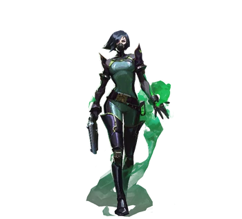

| Sabine Callas proviene de los Estados Unidos, con posibles vínculos con Seattle. Con un doctorado y premios como el Premio R. Francis y el Premio a la Innovación Sobresaliente de Denton, sus ocupaciones anteriores incluyen funciones en Kingdom Corporation, convirtiéndose eventualmente en su primera Directora Científica en la junta de asesores e influencia sobre las empresas del conglomerado en Rabat, Marruecos. Sin embargo, en algún momento durante su tiempo allí, hubo un "incidente". Poco se sabe sobre lo que sucedió, pero todo cambió para Callas en ese momento después de todo lo que perdió por eso, lo que la llevó a aislarse y dedicarse a buscar venganza. Después de los eventos de First Light, se fundó el secreto Protocolo VALORANT, con Callas como uno de sus fundadores y convirtiéndose en su segundo agente, "Viper", y el segundo al mando de Brimstone. Uno de sus miembros más activos y con más experiencia, Viper está involucrado en el reclutamiento de nuevos agentes y participa activamente en muchas de sus misiones. |
 |